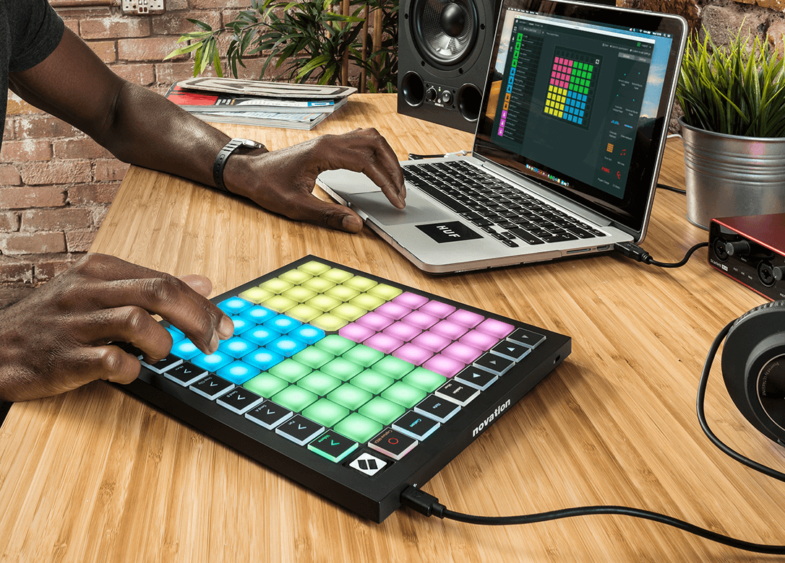

This page is collection of music recommendations, divided between the genres of EDM, pop, and chill. I chose music from artists of very different backgrounds to broaden the scope and feature how they can connect in genre but differ in the way they interpret and present their music to their audiences. This library features a short description, along with the cover art that makes it easy to follow but fun to look through. If you are looking for some quality new music, you have come to the right place! Happy listening:)
